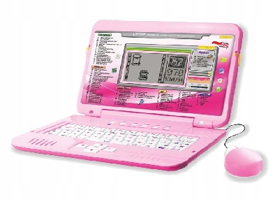

Hardware

Laptop:
Model : Dell Inspirion 5500 G5
CPU: Intel core I5 10300H 2.50 GH/z
GPU 1: Intel UHD Graphic
GPU 2: Nvidia Geforce 1650 TI 4GB
RAM : DDR 4 8GB
Disk : SSD 500GB
OS : Windows 10 x64
PC:
Model: ASUS M4A77TD PRO
CPU : AMD Phenom II x4 925 OC 3GH/z
GPU : ATI Radeon HD 5770 1GB
RAM : DDR 3 4GB
Disk 1: SSD 120 GB
Disk 2: HDD 150 GB
Disk 3: HDD 500 GB
OS: Windows 10/Vista x64
Power supply: NOX 600w
CD-ROM ASUS
RETRO PC
Model: Phoneix
CPU : AMD Athlon XP 1800+ 1.53 GH/z
GPU : Nvidia Geforce 4 mx440 64MB
RAM : DDR/SDRAM 1GB
Disk 1: ATA 80 GB
Disk 2: ATA 40 GB
OS: Windows 2000/XP x86
Power supply: XPower 300w
CD-ROM: LG
DVD-ROM: LG
Floppy Disk Drive 3.5/1.44MB
Linux Laptop
Model: Acer extensa 5220
CPU : Intel Pentium dual-core T4400 2.20 GH/z
GPU : Intel family graphic 8MB
RAM : DDR2 3GB
Disk : HDD 150GB
OS : Linux Mint 21.1 Cinnamon edition x64
CD-ROM
Gaming old laptop
Model: Emachines E728
CPU : Intel core 2 duo T6570 2,10 GH/z
GPU : Intel GMA 4500M
RAM : DDR 3 2GB
Disk: SSHD 250 GB
OS : Windows Vista x64
CD-ROM
Notebook
Model: Dell Inspirion 1545
CPU : Intel Pentium dual-core T4500 2,30GH/z
GPU : AMD Radeon HD 4330
RAM: DDR2 4GB
Disk: SSHD 500GB
OS : WIndows 7 Home Premium x64
CD - ROM

Media Player Laptop
Model : Dell Latitude D510
CPU : Intel Pentium M 1.73 GH/z
GPU : Intel Graphic
RAM : DDR 2 2GB
Disk : 40GB HDD PATA
OS : Windows 7 Home Basic x86
CD-ROM
Projekty
Dell Optiplex
Model : Dell Optiplex GX60
CPU : Intel Celeron 2,40 GH/z
GPU : Intel Graphic
RAM : DDR/SDRAM 512MB
Disk : ATA 20GB
OS : Windows XP x86
CD-ROM
Floppy Disk Drive 3,5 1.44MB
Power supply: Dell 210w

Laptop XD
Model : Acer Aspire Z5710
CPU : Intel Pentium dual-core T2080 1.73 GH/z
GPU : ATI Radeon HD 2300 128MB
RAM : DDR 2 1GB
Disk : HDD 60 GB
OS : Windows Vista x86 / Linux Ubuntu 16.04 x86
CD-ROM
Official
Gruzdows XD 2023 :-D